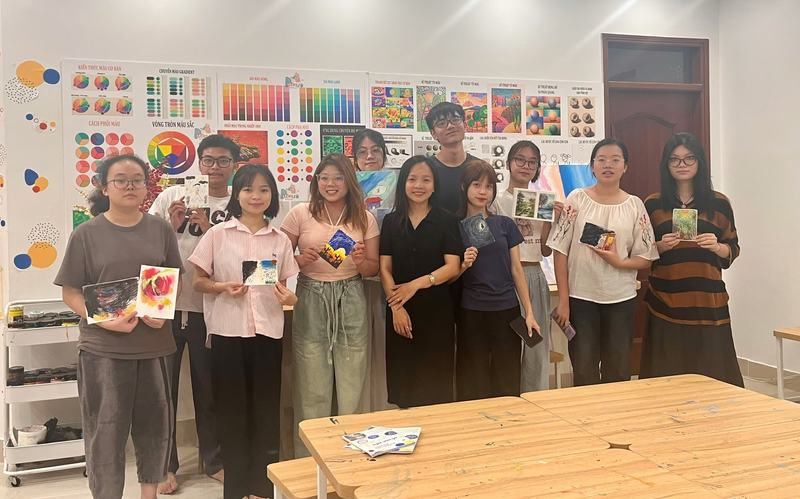
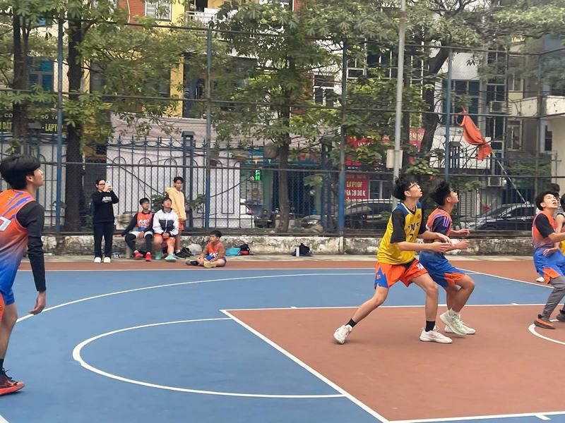
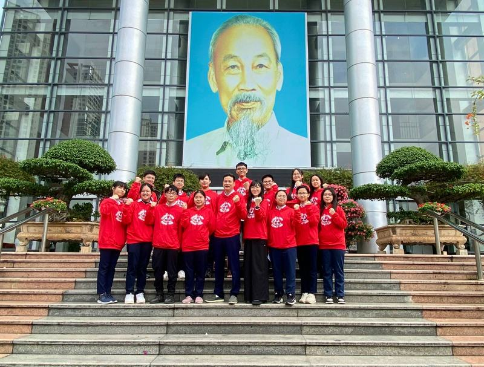
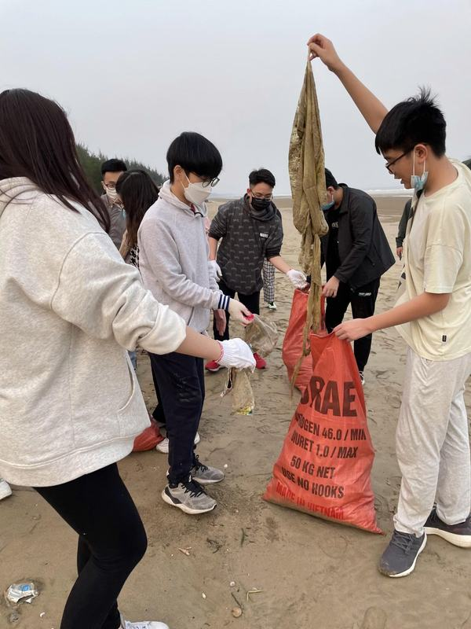

Opening
I started out wanting to help people.
It isn’t a unique place to begin, but it’s where I was, and what follows is a record of learning what “helping people” actually means.
Five chapters. Start at the top or jump to any of them
sTARO
Workshops
For a while I went to whatever my therapist recommended—talks on mental health and sessions on positivity. Then, in high school, after joining sTARO, I started organizing and running them, mostly for people my own age and older. Mostly art, and things done in pairs and groups: activities really about cooperating with someone while making something. They were good sessions. People who came in closed would leave lighter, and by the end, the room felt different.
Through the workshops and the other events I attended, I started noticing that the difference never mattered. Because whatever someone learned in those two hours fell apart afterward. Not because the session failed, per se. Rather, everything that made people open up in that room had been arranged for them: the task, the partner, two hours among people who wouldn’t be there the next time it mattered. None of it existed on the other side of that door. Two hours in the room was never enough to teach someone to deal with the rest of the week.
Halfway through a session, someone would say the “thing.” Not to the other supervisors or me, but to their partner, over an unfinished (or sometimes even blank) drawing. “I’ll only wreck it; you should do the rest.” “I’m not creative; it wouldn’t turn out good.” “There’s no point starting; I never finish anything.” Normally, you might conclude they were being honest, or just weren’t confident. I think it was something else: they were repeating what they’d been told.
So I’d stop the pair and point at the drawing: “You just spent twenty minutes on this, and it isn’t wrecked.” “You said you never finish, and you’re practically done.” It worked most of the time. Sometimes, we went back and forth a little more: “It wasn’t my abilities; the task was just easy.” “My partner handled most of the work.” You could hear where it came from. Nobody turns sixteen having independently concluded they fundamentally waste time.



Research
The turn
While organizing and running these sessions at sTARO, I was also studying and reading extra materials to deepen my knowledge so I could work on research papers and give better advice to the team. From the reading, I could see that what I’d been saying was counter-evidence to what they believed about themselves. So was the drawing. But the evidence was only recognized and believed inside a rented apartment on a random afternoon. By the next session, whatever had convinced them they were incompetent had been said again by someone with a key to the house, with no one there to push back.
The obvious conclusion was to stop running them: the workshops worked, but almost none of what they taught survived beyond the room. The session after (if there was one), many of them had forgotten what we’d practiced or couldn’t bring themselves to apply it, through no fault of their own. I didn’t stop. A room was what I could get. I couldn’t touch what was hurting them: the parents, the school, the words used against them. So the question I turned to wasn’t whether to keep going. It was what would have to change for any of it to hold. Not how to run a better session, but what would have to change in the people who were hurting them.
I’d lived in the same environments they had, so I had a good guess what that was. The field had long had a name for it: stigma.
Stigma is among the most heavily researched barriers to help-seeking, and the evidence is strongest on what I’d seen: less on how it affects treatment than on whether people ask for help at all. It isn’t necessarily the biggest barrier, but it never needed to be. It’s the one that was in the room with us and the one in everyone’s homes. I’d known all of that before I ever stood in front of a group. What I didn’t have was any way to act on it. Nothing I did in a workshop room could reach anyone’s home. The turn wasn’t learning that stigma mattered. It was learning enough to study it myself. Even then, I put it off for a long time, waiting for a supervisor or some kind of formal help that never came. Eventually I was good enough, or bored enough, to stop waiting.
The literature had decades of effort and expertise behind it, but it didn’t know my language. In Vietnamese, the word the older generation still reaches for is điên—crazy. It’s the word for someone with schizophrenia or psychosis, and it’s also the word for anyone called mentally ill at all. Fortunately, my generation has mostly stopped using it. Nowadays, we have other words. Trầm cảm—depression—is all over the internet and our daily lives. But our words aren’t the ones that count at home. There, the list is much shorter, and the only word on it is điên.
A teenager with depression can know the word for what they have: trầm cảm. But the issue is they never hear it from the people who matter to them, from the people whose opinions they actually care about. Instead, they get neatly placed in a box built for the most severe cases, and labeled something that nobody would want to be called. Below that line, a condition isn’t a lesser illness. It isn’t an illness at all. It’s laziness, a phase, or a bad attitude—merely failings of character that can be fixed if you just “put in more effort.” Every sentence I heard over the drawings was some version of that.
So why is their family so afraid of that label? Because it doesn’t stay on the person who has it. Because it is a contaminant.
Most of what I’d read up until that point measured stigma from the person’s perspective: what you believe about mental illness, or what you think everyone else believes. But someone my age can believe all the right things and still say nothing. My guess was that, here, what keeps them quiet is neither. It’s what having it would do to their family.
So I started a study based on that hypothesis. I created a survey targeted at Vietnamese university students that measured those kinds of stigma side by side with who they’d turn to for help, if anyone. I wasn’t trying to show that stigma is worse here or harder to change; I was trying to find out what it runs on.
582 students at four universities in northern Vietnam answered it, and 308 of those answers held up once I removed the careless ones. The pattern I’d been watching held: students who expected their family to pay a price were less willing to turn to their family, and more willing to turn to no one at all. But my guess was only half right. What they think most people believe mattered at least as much for turning to family, so the cost to the family never came out ahead of it. What students personally believe about mental illness barely mattered for turning to family, the reverse of what studies in the US and Ireland found. The effects are small. Whose judgment counts here may be both: the public, and the people around the family.
The study itself, with its method, numbers and limits, is on the Research page
I’d written those cost questions as two separate sets, one about family and one about friends, because I thought they were different fears. My respondents answered them as if they were one. The data can’t tell me why, but I think the people who taught them to be afraid are the same people they’re afraid for.
If I’m right, though, the person with the key to the house is two things at once. They’re where the negative beliefs come from, and they’re who their children are trying to protect from the label. Merely changing what people believe won’t be enough. What has to change is how much the word costs a family.
I started out wanting to help people. Most of the people this is about were never going to walk into a room.
10th and 11th grade
Cerebral palsy
For two years, across 10th and 11th grade, I spent time with children with cerebral palsy, mostly sitting on the floor and playing with them.
Though it’s obviously a different population from the one in my research, it’s part of what got me thinking about the line between a neurological condition and a mere character flaw.
Apart from that, though, it left me with a question of its own. What activities and exercises actually enable children with CP to function better in their everyday lives? CP doesn’t go away, so the question was never about a cure. It was about something closer to the behavioral treatments that neurodivergent children practice.


About twelve years
Piano, and the basketball I gave up for it
I studied piano for about twelve years, starting at three, and didn’t like it for most of them. The practice was rigorous and meticulous, and it started long before I had any say in it. I think my dad loved classical pianists and wanted me to be like them—thirty-some pieces, all Classical and Romantic. The lessons wound down when I started high school, and the last piece was Liszt’s Liebestraum No. 3.
What changed it was hip-hop and rock. I’d play the same album dozens of times, trying to work out everything happening in it. And the practice I’d hated turned out to be what let me hear it: the layers, and all the small things going on inside them. That made me love music, and want to play it and understand it for myself. I built my own taste, checked my own technique, and practiced more than I ever had when I was made to. Starting on spring break in 11th grade, I played for a month straight. Nobody made me.

Around the same time, I got into basketball. I followed the Lakers and kept up with everything, through seasons where we didn’t win much or get far in the playoffs, and it made me want to play. A couple of months in, I was in a 3x3 tournament. The team never really worked together, and I got tripped in the first game and rolled my ankle. I played through it, badly, but I was still the one calling plays, helping on defense, and hustling. In the final, we were getting cooked by their best player, so I got subbed in to guard him. I couldn’t do much on offense. I locked him up anyway.
I quit after that. It was tiring, but not because of the practice. It was the team. Nobody cooperated, nobody was supportive, and nobody really tried to understand that I was playing on a rolled ankle. Basketball was also going to ruin my fingers, and by then I loved music more than I ever had. I wanted to do both. I couldn’t, so I chose piano.
It still gets frustrating when I can’t play something well. At least I’m getting back into it.


Awards and service
Tap any cover to see its photos
-
Silver
Asia-Pacific Arts Festival
Piano
-

2BronzeCity-level English competition
With the city English team
-
Silver
KAO Sports 3x3 Winter Cup
Basketball, played on a rolled ankle
-
7
Service
Two-day donation trip
To an ethnic minority community in the mountains
-

2ServiceCoastal cleanup


Shorter thinking lives in my zettelkasten: about 1,500 linked notes on psychology, philosophy and reading. Explore the vault